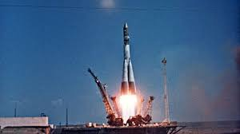
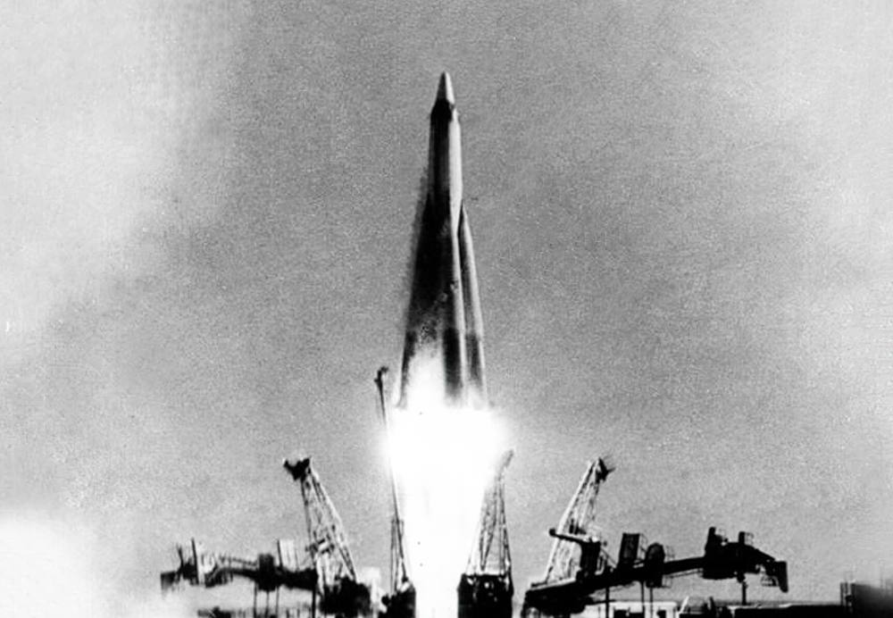
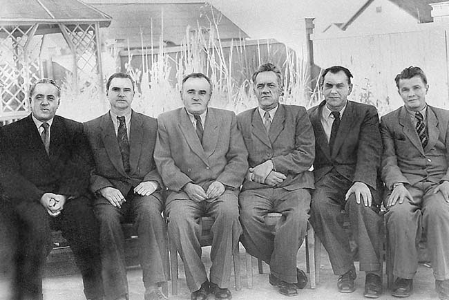
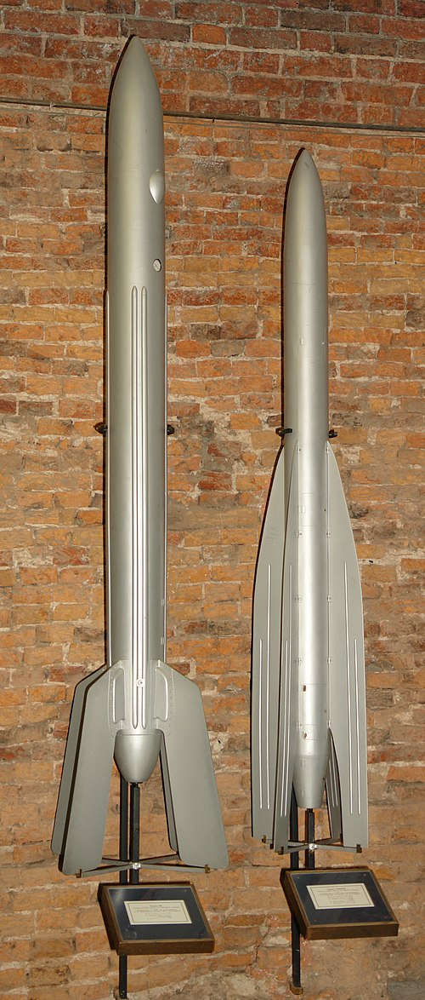
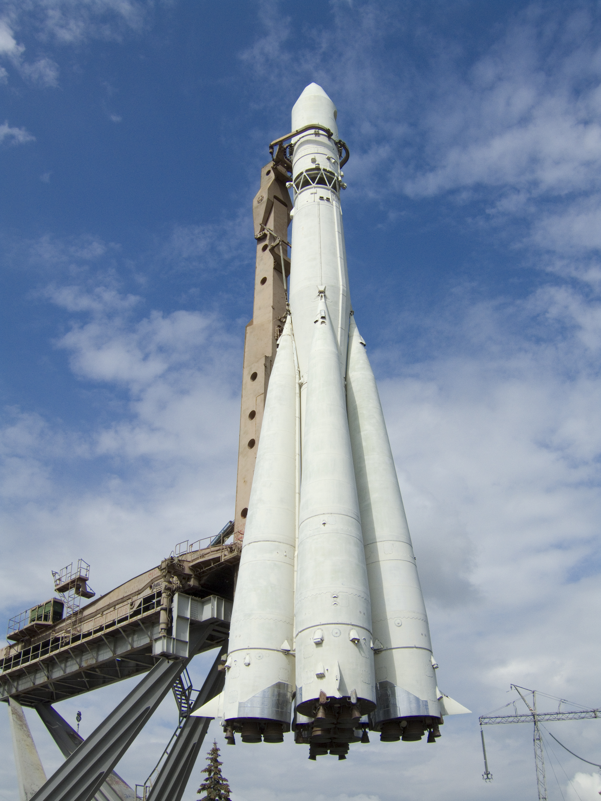
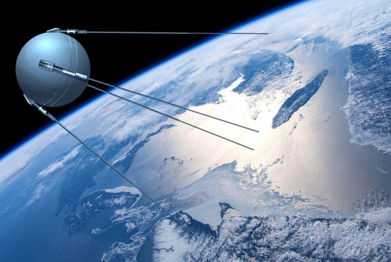
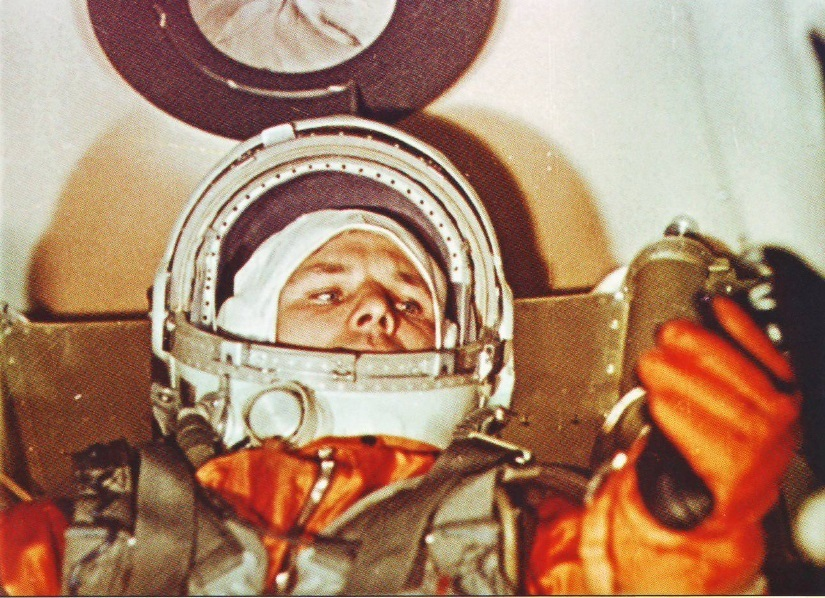
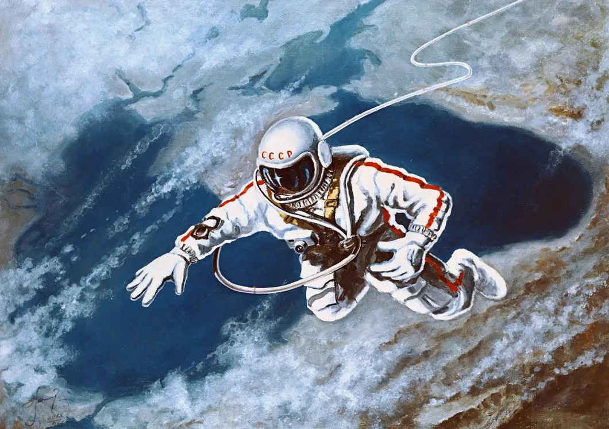

ПОДРОБНАЯ ЛЕТОПИСЬ ПРОРЫВА
Подготовка: Отряд №1
Решение о наборе космонавтов было принято в 1959 году. Искали военных летчиков-истребителей: они уже привыкли к перегрузкам, стрессам и прыжкам с парашютом. Требования были жесткими: возраст до 30 лет, рост не более 170 см (кабина «Востока» была очень тесной), вес до 70 кг. Из 3461 кандидата отобрали всего 20 человек. Будущие космонавты проходили изнурительные испытания в сурдокамере (одиночество в полной тишине на несколько суток) и на центрифуге.

Ракета-носитель Р-7
Чтобы вывести человека на орбиту, Королеву потребовалась модификация боевой межконтинентальной баллистической ракеты. Стартовая масса — 287 тонн. Она состояла из центрального блока и четырех боковых, которые эффектно отбрасывались в форме «креста Королева».

Корабль «Восток-1» и СК-1
Кабина имела форму шара, обшитого специальным теплозащитным слоем. Космонавт находился в катапультируемом кресле и был облачен в скафандр СК-1 оранжевого цвета. Приземление происходило не в самой капсуле: на высоте 7 км Гагарин катапультировался и спускался на парашюте.

Совет Главных Конструкторов
Гении, скрытые под грифом «Секретно». С.П. Королев руководил всей программой. В.П. Глушко проектировал уникальные двигатели РД-107, М.В. Келдыш вел математические расчеты орбит, а Н.А. Пилюгин создал автономные системы управления.
Нештатные ситуации 12 Апреля
Полет прошел не так гладко, как писали в газетах. Из-за сбоя в системе радиоуправления выключением двигателей, корабль поднялся на орбиту выше расчетной (апогей 327 км вместо 230 км). Если бы отказала тормозная установка, корабль спускался бы за счет естественного трения об атмосферу не 5-7 дней, как планировалось, а больше месяца, и Гагарину не хватило бы запасов воздуха. Кроме того, при сходе с орбиты приборный отсек не отделился сразу от спускаемого аппарата, из-за чего корабль около 10 минут совершал беспорядочное вращение.
Генезис советской космической программы: от ГИРД до «Спутника»
Путь к 12 апреля 1961 года был заложен десятилетиями теоретических изысканий и рискованных технических экспериментов. Советская космическая программа выросла из энтузиазма ранних исследовательских групп, таких как ГИРД (Группа изучения реактивного движения), действовавшая в 1930-х годах.

Запуск ГИРД-09, 17 августа 1933 года — рождение отечественного жидкостного ракетостроения
17 августа 1933 года на полигоне в Нахабино успешно стартовала ракета «ГИРД-09» — это фактически ознаменовало рождение отечественного жидкостного ракетостроения. В последующие годы интенсивность испытаний нарастала: в августе 1937 года ракета «АвиаВНИТО» достигла высоты более 3000 метров, а в 1938 году успешно стартовала Р-05.
Послевоенный период характеризовался консолидацией ресурсов и созданием специализированных полигонов. 18 октября 1950 года с полигона Капустин Яр был осуществлен первый успешный пуск ракеты Р-1, ставшей прямым предшественником более мощных систем. Однако подлинный прорыв произошел с разработкой ракеты-носителя Р-7, которая стала универсальным инструментом вывода объектов на орбиту.

Ракета Р-7 — родоначальница всех советских пилотируемых кораблей
4 октября 1957 года мир вступил в космическую эру. С 5-го Научно-исследовательского полигона Министерства обороны СССР (космодром Байконур) был запущен первый в мире искусственный спутник Земли. Этот запуск имел не только научное, но и колоссальное идеологическое значение, продемонстрировав превосходство советской технологии в разгар холодной войны. Уже 3 ноября 1957 года на орбиту был выведен второй спутник с живым существом на борту — собакой Лайкой, что позволило ученым приступить к изучению влияния условий орбитального полета на биологические системы.

ПС-1 (простейший спутник-1) — начало космической эры человечества
Триумф «Востока-1»: анатомия первого пилотируемого полета
Событие 12 апреля 1961 года стало кульминацией многолетней работы под руководством академика Сергея Павловича Королева. Космический корабль «Восток» с Юрием Алексеевичем Гагариным на борту был выведен на околоземную орбиту, что навсегда изменило представление человека о своих возможностях.
Техническая спецификация миссии
Согласно официальным документам того времени, в частности сообщению ТАСС, старт ракеты-носителя прошел штатно, и после отделения от последней ступени корабль начал свободный полет по орбите. Параметры полета фиксировались с высокой точностью: перигей — 175 км, апогей — 302 км, наклонение орбиты — 65°4'. Период обращения — 89,1 минуты. Вес корабля «Восток» составлял 4725 кг.
На борту была установлена двухсторонняя радиосвязь на частотах 9,019 / 20,006 МГц (КВ) и 143,625 МГц (УКВ). Телевизионная система позволяла наблюдать за состоянием космонавта.
Документальное свидетельство: Сообщение ТАСС и рапорт Гагарина

Юрий Гагарин в кабине корабля «Восток-1»
«В Советском Союзе выведен на орбиту вокруг Земли первый в мире космический корабль-спутник «Восток» с человеком на борту. Пилотом-космонавтом является гражданин Союза Советских Социалистических Республик летчик майор Гагарин Юрий Алексеевич.» — из сообщения ТАСС
После благополучной посадки в 10:55 мск Гагарин доложил: «Прошу доложить партии и правительству и лично Никите Сергеевичу Хрущеву, что приземление прошло нормально, чувствую себя хорошо, травм и ушибов не имею.»
Полная хронология освоения космоса (1957–2024)
| Год | Дата | Ключевое событие | Техническая платформа / Экипаж |
|---|---|---|---|
| 1957 | 04.10 | Запуск первого ИСЗ | Спутник-1 (Р-7) |
| 1961 | 12.04 | Первый пилотируемый полет | Восток-1 (Ю. Гагарин) |
| 1961 | 06.08 | Первый суточный полет | Восток-2 (Г. Титов) |
| 1962 | 11.08 | Первый групповой полет | Восток-3 и Восток-4 |
| 1963 | 16.06 | Полет первой женщины-космонавта | Восток-6 (В. Терешкова) |
| 1964 | 12.10 | Первый многоместный корабль | Восход-1 (Комаров, Феоктистов, Егоров) |
| 1965 | 18.03 | Первый выход в открытый космос | Восход-2 (А. Леонов) |
| 1966 | 03.02 | Мягкая посадка на Луну | АМС Луна-9 |
| 1966 | 03.04 | Спутник Луны | АМС Луна-10 |
| 1970 | Ноябрь | Луноход-1 | Первый автоматический планетоход |
| 1971 | Декабрь | Марс-3 | Первая мягкая посадка на Марс |
| 1975 | 17.07 | Союз — Аполлон | Первая международная стыковка |
| 1986 | Февраль | Орбитальная станция «Мир» | Многомодульный комплекс |
| 1992 | 21.01 | Первый запуск под флагом РФ | Космос-2175 (Союз-У) |
| 1998 | Ноябрь | Запуск блока «Заря» | Начало строительства МКС |

Орбитальная станция «Мир» — символ долговременного присутствия человека в космосе
Архивные и медиа-файлы: звуки и документы эпохи
В 2022–2023 годах Госкорпорация «Роскосмос» рассекретила личное дело Юрия Гагарина. Среди документов — уточнённая продолжительность полёта: около 106 минут вместо официальных 108. Разница связана с моментами касания капсулы и приземления космонавта на парашюте.
Сохранились уникальные аудиозаписи: позывные «Кедр» (Гагарин) и «Заря» (Королев), знаменитое «Поехали!», а также переговоры Алексея Леонова во время первого выхода в открытый космос. Все эти материалы доступны в разделе Медиа.

Алексей Леонов — первый человек в открытом космосе, 18 марта 1965 года